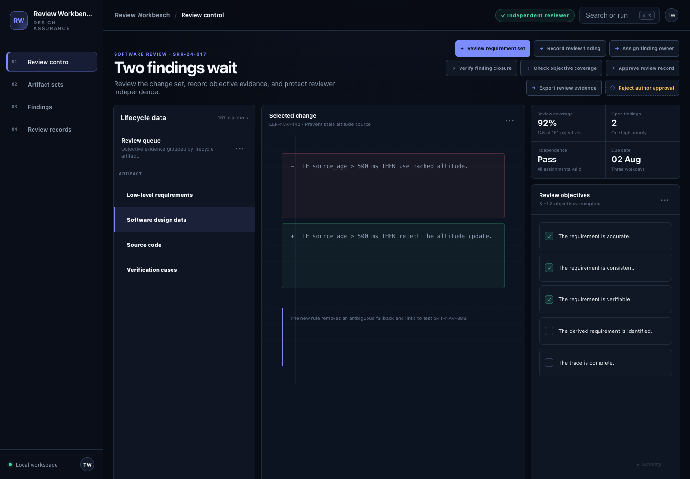
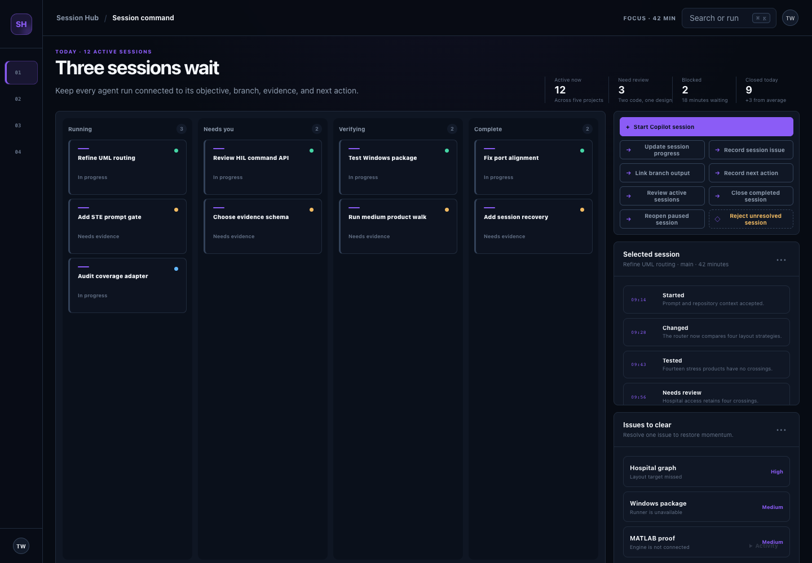
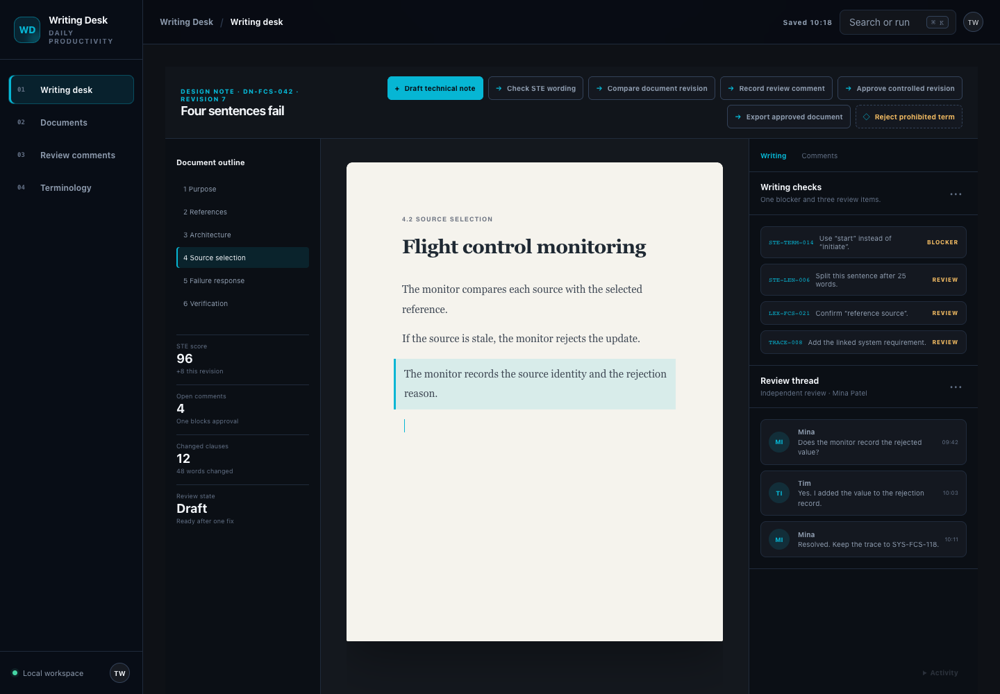
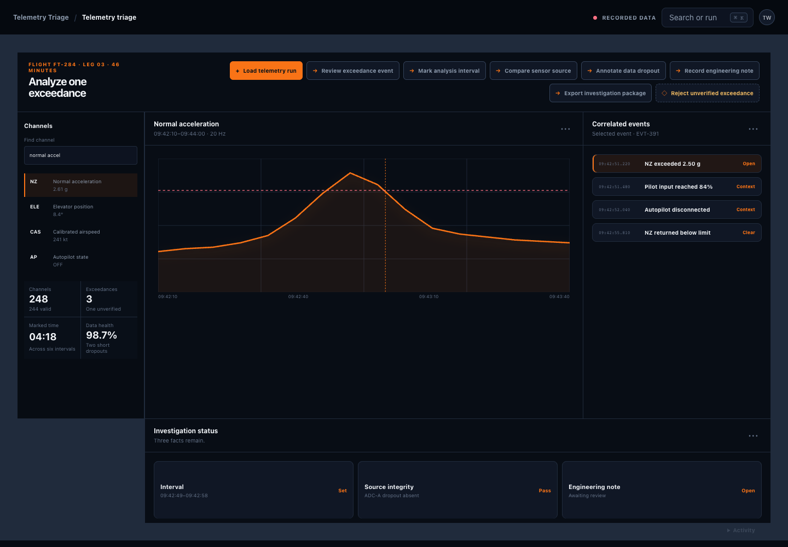
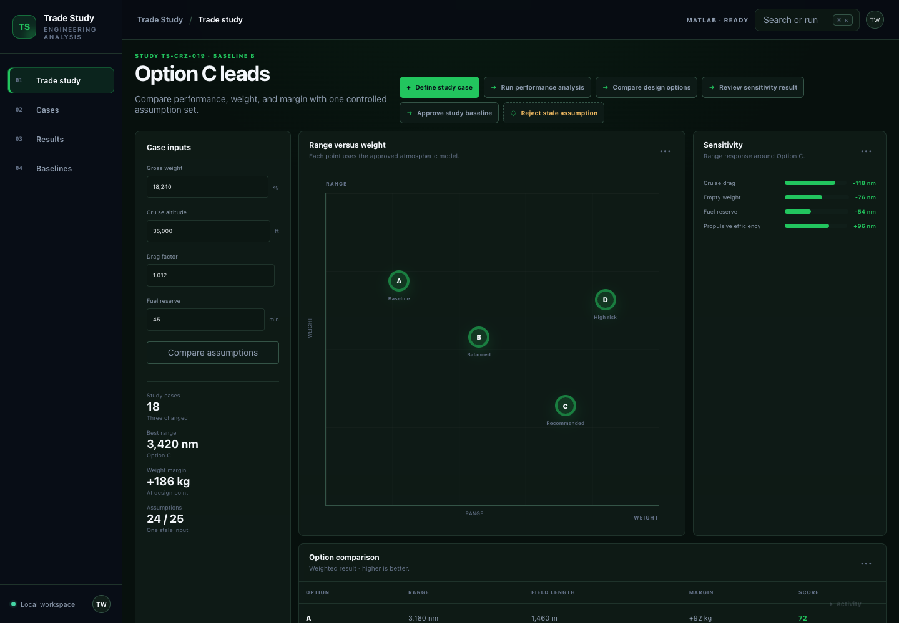
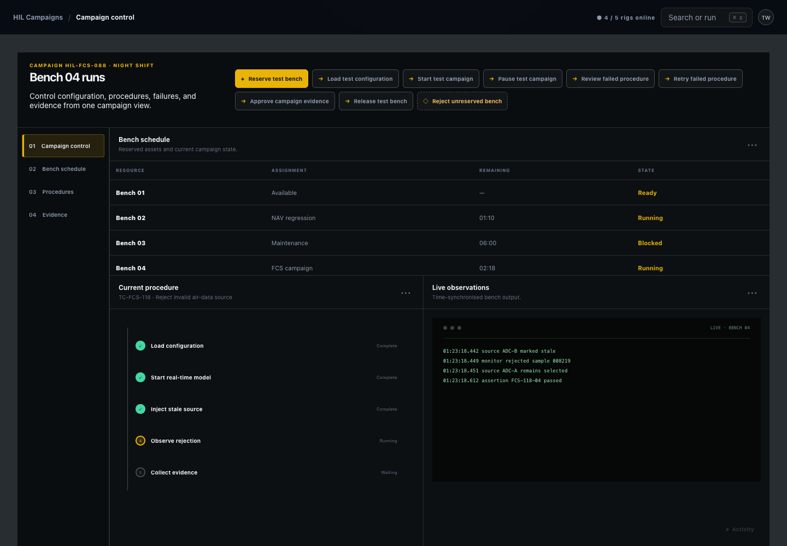
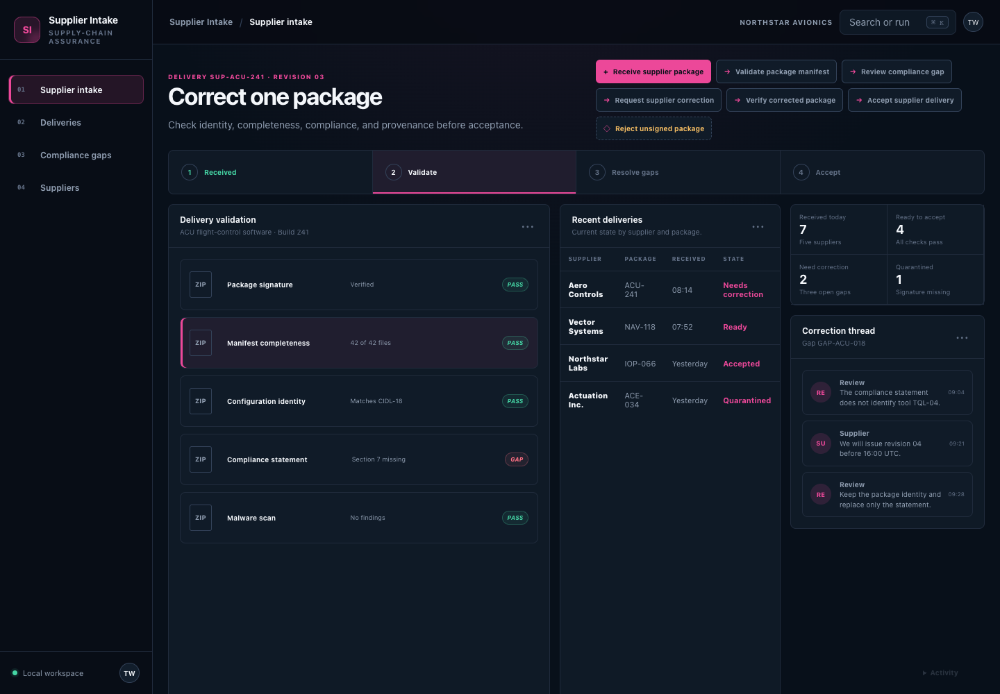
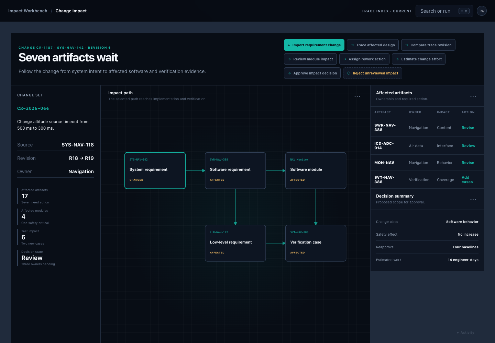
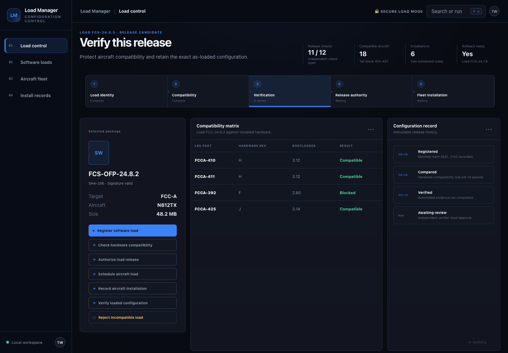
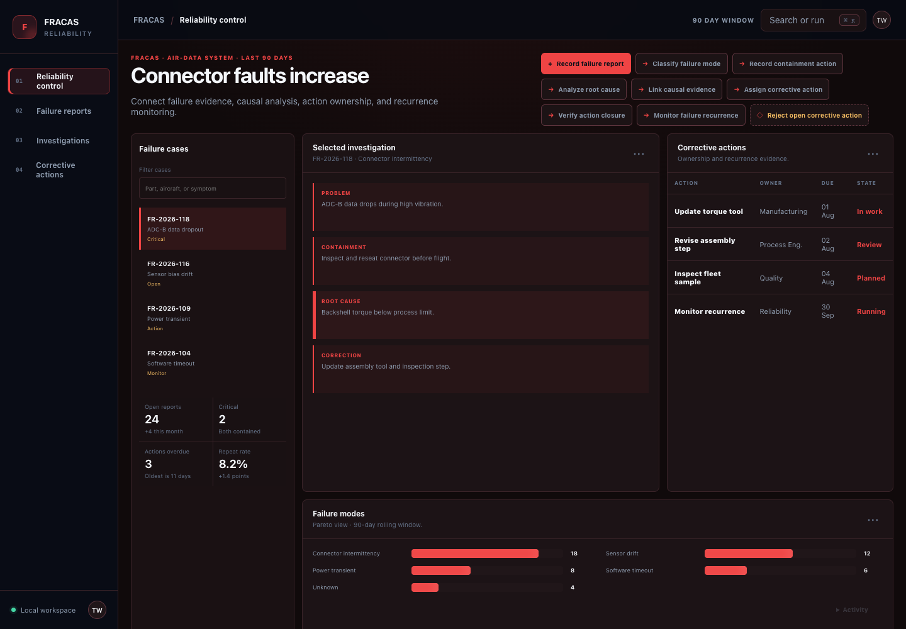

01 · Design assurance
DO-178C Review Workbench
Run independent reviews of software lifecycle data and preserve review evidence.
Each product starts with its own brief, approves its own use cases and architecture, designs every module, applies a task-specific frontend and state service, connects varied UI scenarios, and retains immutable evidence.

Run independent reviews of software lifecycle data and preserve review evidence.

Track Copilot sessions, progress, issues, outputs, and next actions across engineering projects.

Draft technical content, enforce ASD-STE100, manage comments, and approve controlled documents.

Triage recorded telemetry, exceedances, analysis intervals, and investigation evidence.

Run MATLAB-backed analyses, compare options, review sensitivity, and approve study baselines.

Reserve benches, load configurations, execute procedures, manage failures, and preserve campaign evidence.

Validate supplier packages, record gaps, coordinate correction, and control acceptance.

Trace requirement changes through design, interfaces, implementation, verification, and approval.

Control load identity, compatibility, release authorization, installation, and as-loaded evidence.

Capture failures, analyse causes, control corrective actions, and verify closure.